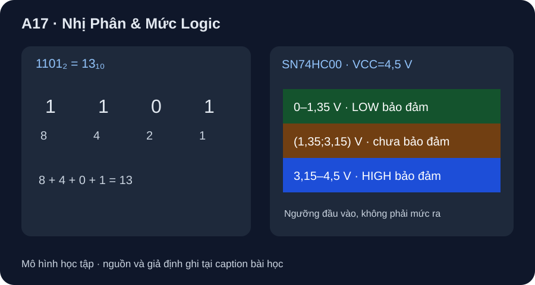

Nhị Phân & Mức Logic
Bit là ký hiệu; điện áp ở chân IC cần ngưỡng của chính part và điều kiện cấp nguồn.
- Đổi số nguyên không dấu giữa hệ 10 và hệ 2 bằng trọng số lũy thừa 2.
- Phân biệt bit/giá trị Boolean với điện áp đầu vào chân IC.
- Dùng VIL,max/VIH,min đúng VCC và VOH,min/VOL,max ở đúng tải để phân loại mức và tính biên nhiễu.

Đọc hình bằng chữ
Bốn ô từ trái sang phải có trọng số 8, 4, 2, 1; hàng bit 1, 1, 0, 1 cho tổng 13. Thang bên phải tách 0 đến 1,35 V là vùng nhận thấp được bảo đảm, trên 1,35 đến dưới 3,15 V là vùng không được bảo đảm 0/1, từ 3,15 đến 4,5 V là vùng nhận cao được bảo đảm, với VCC=4,5 V và các điều kiện vận hành của datasheet.
1. Bit không tự có điện áp
Một bit nhận 0 hoặc 1 trong phép tính. Chuỗi 1101₂ có bốn vị trí theo thứ tự 2³, 2², 2¹, 2⁰: 1×8+1×4+0×2+1×1=13₁₀. Muốn đổi 13 từ hệ 10, chọn 8 còn 5, chọn 4 còn 1, bỏ 2, chọn 1. Bit cao bên trái là MSB; số bit phải được nêu trước khi bàn tràn hay số âm. Ví dụ này là số không dấu.
2. Từ bit sang đầu vào NAND thật
TI SNx4HC00 Rev. H, §6.3 quy định SN74HC00 làm việc với VCC=2–6 V. Riêng VCC=4,5 V, VIL,max=1,35 V và VIH,min=3,15 V. Do đó 1,0 V ở chân vào thuộc mức thấp được bảo đảm; 3,3 V thuộc mức cao được bảo đảm; 2,0 V ở khoảng giữa, không được datasheet bảo đảm sẽ đọc 0 hay 1. Không gọi vùng này là một mức logic thứ ba của cổng NAND.
Ngưỡng đầu vào không phải điện áp đầu ra, và một giá trị 3,3 V chỉ được phân loại theo giả định nó thực sự xuất hiện tại chân vào IC đang cấp 4,5 V. Khi nối hai IC thật, còn phải kiểm VOH,min/VOL,max của bên phát ở đúng tải, ngưỡng bên nhận, nguồn chung và điều kiện nhiệt. Không suy từ bài này rằng GPIO 3,3 V của một board bất kỳ đã tương thích.
Ví dụ biên nhiễu cùng họ HC: cho một ngõ ra SN74HC00 lái một đầu vào SN74HC00, cả hai ở VCC=4,5 V, nhiệt độ −40…85 °C. Ở điều kiện tải datasheet IOH=−20 µA, IOL=20 µA, TI §6.5 bảo đảm VOH,min=4,4 V và VOL,max=0,1 V. Ghép với ngưỡng §6.3: NMH=VOH,min−VIH,min=4,4−3,15=1,25 V; NML=VIL,max−VOL,max=1,35−0,1=1,25 V. Đây là biên DC theo các điều kiện đã nêu, không là lượng nhiễu thực đo, không bao gồm xung nhanh/crosstalk, và sẽ phải tính lại với tải/part khác.
3. Hoạt động bảng tính
Lập cột trọng số 8,4,2,1 và điền 1101; tính tổng. Với VCC=4,5 V của SN74HC00, đặt ba cột Vin=1,0; 2,0; 3,3 V, so từng giá trị với 1,35 và 3,15 V, ghi thấp / chưa bảo đảm / cao. Ghi tên part và mục datasheet cạnh bảng; không cần cấp nguồn hay chạm mạch.
| Vin | Kết luận đầu vào | Lý do |
|---|---|---|
| 1,0 V | Thấp được bảo đảm | ≤1,35 V |
| 2,0 V | Chưa bảo đảm | >1,35 V và <3,15 V |
| 3,3 V | Cao được bảo đảm | ≥3,15 V |
Không đưa điện áp vào chân vượt giới hạn vận hành của part. Bài này không có BOM, sơ đồ nối nguồn/decoupling, đặc tính ngõ ra, phép đo hay chứng nhận tương thích hai họ logic.
Đổi 22₁₀ sang nhị phân không dấu rồi tính ngược. Tại đầu vào SN74HC00 cấp 4,5 V, phân loại 1,2 V, 2,0 V và 3,2 V. Vì sao không thể gọi 2,0 V là 0 chắc chắn? Nếu tải ra ở điều kiện IOH=−4 mA, datasheet §6.5 cho VOH,min=3,84 V ở −40…85 °C, tính lại NMH khi lái cùng họ ở VCC=4,5 V.
- 1 điểm:
22=16+4+2, nên10110₂(5 bit). - 1 điểm: tính ngược
1×16+0×8+1×4+1×2+0×1=22. - 1 điểm: 1,2 V thấp, 2,0 V chưa bảo đảm, 3,2 V cao theo ngưỡng 1,35/3,15 V của SN74HC00 ở VCC=4,5 V.
- 1 điểm: 2,0 V nằm giữa VIL,max và VIH,min; bảng chân trị lý tưởng không gán điện áp này thành 0.
- 1 điểm: tại IOH=−4 mA,
NMH=3,84−3,15=0,69 Vtheo VOH,min tại điều kiện tải/nhiệt đã nêu; không dùng biên 1,25 V của tải nhẹ.